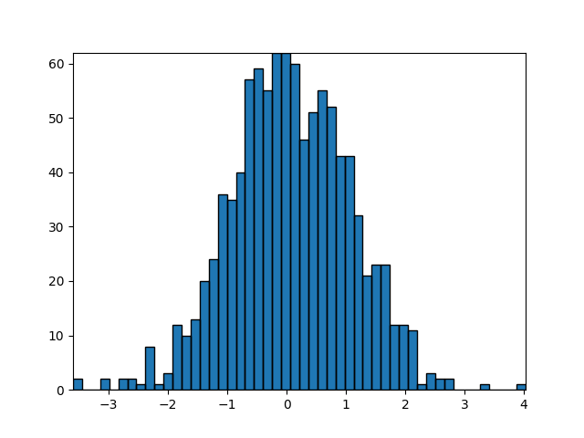

Version 2.2.2
Note
Click here to download the full example code
Using a path patch to draw rectangles. The technique of using lots of Rectangle instances, or the faster method of using PolyCollections, were implemented before we had proper paths with moveto/lineto, closepoly etc in mpl. Now that we have them, we can draw collections of regularly shaped objects with homogeneous properties more efficiently with a PathCollection. This example makes a histogram – its more work to set up the vertex arrays at the outset, but it should be much faster for large numbers of objects
import numpy as np
import matplotlib.pyplot as plt
import matplotlib.patches as patches
import matplotlib.path as path
fig, ax = plt.subplots()
# Fixing random state for reproducibility
np.random.seed(19680801)
# histogram our data with numpy
data = np.random.randn(1000)
n, bins = np.histogram(data, 50)
# get the corners of the rectangles for the histogram
left = np.array(bins[:-1])
right = np.array(bins[1:])
bottom = np.zeros(len(left))
top = bottom + n
# we need a (numrects x numsides x 2) numpy array for the path helper
# function to build a compound path
XY = np.array([[left, left, right, right], [bottom, top, top, bottom]]).T
# get the Path object
barpath = path.Path.make_compound_path_from_polys(XY)
# make a patch out of it
patch = patches.PathPatch(barpath)
ax.add_patch(patch)
# update the view limits
ax.set_xlim(left[0], right[-1])
ax.set_ylim(bottom.min(), top.max())
plt.show()
Keywords: matplotlib code example, codex, python plot, pyplot Gallery generated by Sphinx-Gallery